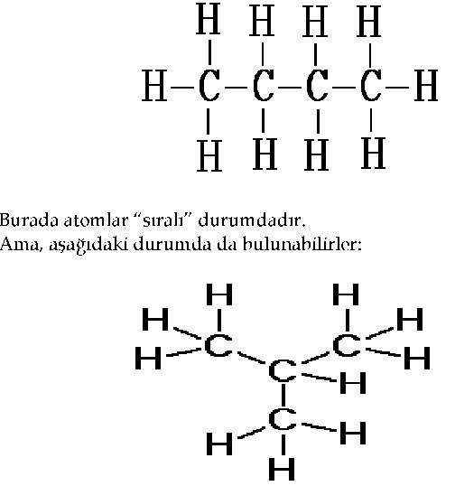
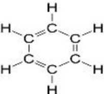
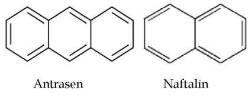
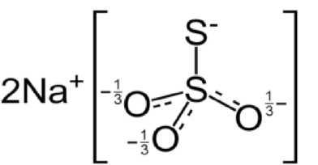
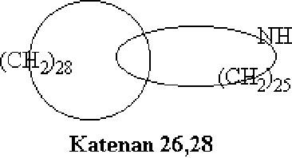

III. KİMYA MÜZESİ
58. YANITSIZ BİR SORU
Dünyanın en büyük kimyacılarını biraraya toplasak ve: "Periyodik Sistem'deki elementler kaç tane kimyasal bileşik oluşturabilir?" diye sorsak, onlar bile yaklaşık bir sayı söyleyemez.
En basit kimyasal bileşiği biliyoruz: Hidrojen molekülü.
Daha basit bir bileşik olamaz, çünkü hidrojen Mendeleyev Çizelgesi'nin ilk ve en hafif temsilcisidir.
Peki, en karmaşık bileşik hangisidir?
Kesin bir şey söyleyemeyiz.
Kimya, onbin, yüzbin hatta milyonlarca atomdan oluşan dev moleküller bilir.
Karmaşıklığın bir sınırı olup olmadığını henüz kimse söyleyemez.
Öte yandan, kaç kimyasal bileşiğin bilindiğini yaklaşık olarak kestirebiliriz. Ama, bugün vereceğimiz sayı yarın geçersiz olacaktır.
Günümüzde, yerküre üzerindeki laboratuvarlarda her gün yaklaşık on tane yeni madde sentezlenmekte ve bu günlük verim yıldan yıla artmaktadır.
Kimyasal bilgilendirme servisi bize aşağı yukarı iki milyon kimyasal bileşiğin doğal hammadelerden izole edildiğini veya yapay olarak üretildiğini söyler.
Bu etkileyici bir sayıdır ama Büyük Ev'in her sakininin buna katkısı çok değişiktir. Örneğin helyum, neon, argon gibi soylu gazların bileşiklerinin sayısı sıfırdır! Nadir bir toprak elementi olan prometyumun (bu element nükleer reaktörlerde fizikçiler tarafından yapay olarak hazırlanmıştır)
oldukça sıradan üç tane kararlı bileşiği elde edilmiştir: Hidratlı, nitratlı ve klorürlü bileşikler. Diğer yapay elementlerin de bileşik oluşturma bakımından durumları pek parlak değildir. Bunların, miktarı çok sayıda atomdan ibaret bileşikleri hazırlanmıştır... Yani, onların bileşikleri hakkında söylenecek fazla bir şey yoktur.
Ama, Mendeleyev Çizelgesi'nde eşsiz bir element vardır. Bu element, oluşturabildiği karmaşık maddelerin sayısı açısından tam bir istisnadır.
O, Büyük Ev'de altı numarada oturur ve adı karbondur.
Bilinen iki milyon farklı molekülden 1.700.000'ni karbon atomlu iskelete sahip moleküllerdir. Bu bileşikler, kimyanın organik kimya denilen muazzam dalında incelenirler. Diğer tüm elementlerin bileşikleri, anorganik kimyanın konusunu oluşturur.
Gördüğünüz gibi, organik maddeler anorganik maddelerden altı kat fazladır. Yeni bir organik maddenin sentezlenmesi, kural olarak, çok daha kolaydır. Anorganik kimyacılar hergün en azından bir tane yeni bileşik sentezlediklerini açıklayabilselerdi harika olurdu. Doğrusu, son yıllarda bu konuda umut verici gelişmeler olmaktadır.
Organik kimyacılara, karbon atomlarının olağanüstü bir özelliği yardımcı olmaktadır.
59. ÇEŞİTLİLİĞİN NEDENLERİ VE SONUÇLARI
Karbon atomları, uzun çizgiler boyunca birbiri ardına dizilerek çok kolay zincir oluştururlar.
En kısa zincir, iki karbon atomundan oluşur.
Örneğin, bir hidrokarbon olan etan molekülü, iki halkalı zincir şeklindedir: H3C-CH3.
Peki, en uzun zincir hangisidir?
Henüz bilinmiyor.
Zincirinde 70 karbon halkası olan bileşikler elde edilmiştir.
Burada polimerlerden değil sıradan bileşiklerden söz edildiği belirtilmeli.
Polimerlerde, hidrokarbon zincirleri çok daha uzun olabilir
Diğer elementlerin hiç birinin böyle bir yeteneği yoktur.
Yalnızca silisyum, altı halkalı bir zincir oluşturma lüksüne sahiptir.
Bir de bilim adamları, üç metal atomunun bir zincire bağlandığı hidrojen germanit (Ge3Hs) denilen garip bir germanyum bileşiği elde etmişlerdir. Bu bileşik, metaller arasında türünün tek örneğidir.
Özet olarak, karbon "zincir oluşturma kapasitesi" bakımından rakipsizdir.
Fakat, karbon zincirleri sadece çizgisel dizilişte olsalardı, organik kimyada böylesine inanılmaz sayıda bileşik bulunmazdı.
Zincirler dallanabilir ve halka oluşturmak üzere kapanabilirler.
Halkalar üç, dört, beş, altı ve daha çok karbon atomundan oluşan çokgenlerdir.

Yukarıdaki iki formülde atomların sayısı aynı, düzenlenişleri farklıdır.
Bütan adlı hidrokarbon zinciri, dört karbon atomundan oluşur:
İkinci formül, farklı özelliklerde adı da farklı başka bir maddeyi, izobütanı göstermektedir.
Beş karbon atomu, doğrusal zincirden başka beş dallı zincir de oluşturabilir.
Bu yapılanmaların her biri ayrı bir kimyasal maddeyi simgeler.
Kimyacılar, farklı şekillerde düzenlenmiş aynı sayıda atom içeren kimyasal bileşiklere özel bir ad düşünmüş ve onlara izomer demişlerdir.
Moleküldeki karbon atomlarının sayısı ne kadar çoksa, izomer sayısı o kadar fazla olur.
Aslında, izomer sayıları geometrik olarak büyür.
Bu büyüme, organik kimyaya yüzbinlerce yeni bileşiğin katılmasına yol açar.
60. KİMYASAL HALKALAR
Büyük bilim adamlarının önemli buluşlarını nasıl yaptıklarına ilişkin anlatılan masallar az değildir. Newton'un kütlesel çekim yasasını bahçesinde düşüncelere dalmışken ayaklarının dibine düşen bir elmadan esinlenerek bulduğu söylenir. Mendeleyev'in ise Periyodik Sistem'i ilk kez rüyasında gördüğünden söz edilir. Bütün yapması gereken, uyanıp "rüyasını" kağıda geçirmekti!
Kısacası, buluşlar ve bulucuları için türlü türlü öyküler anlatılmıştır.
Ünlü Alman kimyacı Kekule'nin buluşunun esin kaynağı ise tuhaf bir şekildir. Bilim adamları, en önemli organik bileşiklerden biri olan benzeni uzun zamandır tanıyor, altı karbon atomuyla altı hidrojen atomundan oluştuğunu biliyorlardı; onun pek çok tepkimesini de incelemişlerdi. Fakat, asıl önemli noktayı, yani altı karbon atomunun uzayda nasıl dizildiğini bilmiyorlardı. Bu sorun yüzünden Kekule huzursuzdu.
Sorunu nasıl çözdüğünü kendisinden dinleyelim:
"Masamda oturmuş bir ders kitabı yazıyordum ve hiçbir yere varamıyordum. Düşüncelerim çok uzaklardaydı. Atomlar gözlerimin önünde dans ediyordu. Akıl gözüm, yılan gibi kıvrılıp bükülen uzun atom dizilerini ayırt edebiliyordu. Fakat o ne! Yılanlardan biri aniden kendi kuyruğunu yakaladı ve gözlerimin önünde beni kızdırmak istercesine dönmeye başladı. Bir şimşek çakmasıyla uyanmış gibi yerimden fırlamıştım..."
Raslantı sonucu Kekule'nin aklına gelen kuyruğu ağzında yılan şekli, Kekule'de karbon zincirlerinin çevrim oluşturmak üzere kapanabileceği düşüncesini uyandırmıştı.
Kekule'den sonra kimyacılar benzenin yapısını şöyle göstermeye başladılar:

Benzen halkası, organik kimyada çok önemli bir rol oynamıştır.
Halkalarda farklı sayıda karbon atomu bulunabilir.
Birbirine bağlanan geometrik şekiller oluşturarak aynı zamanda halkalar büyüyebilir de. Halkalar dünyası açık zincirli karbon bileşikleri dünyası kadar zengindir. Herhangi bir organik kimya kitabı, bir geometri ders kitabına benzer, çünkü hemen her sayfasında karmaşık organik bileşiklerin yapısal formülü olan "geometrik şekiller" vardır.
İşte benzen halkalarının oluşturabildiği iki hoş örnek: Sağdaki örnek naftalinin yapısal formülüdür. Soldaki, sert kömürün bir bileşeni olan antrasendir.

61. ÜÇÜNCÜ BİR OLASILIK
Karbon elementinin üç maddenin birliğinden oluştuğu düşünülürdü. Bilim adamları buna "üçlü" allotropi derler. Başka bir deyişle, aynı element üç farklı allotropik şekilde bulunabilir. Üç karbon örneği elmas, grafit ve karbon siyahıdır. Bunlar birbirlerinden çok farklıdır: "Sertlik kralı" elmas; yumuşak pulsu grafit ve donuk renkli karbon siyahı. Aralarındaki fark, moleküllerinde bulunan karbon atomlarının farklı düzende olmasından kaynaklanır.
Elmasta, karbon atomları düzgün dörtyüzlü (tetrahedral) denen geometrik şeklin köşelerinde yer alır ve birbirlerine büyük bir kuvvetle bağlıdır. Elmas bu yüzden çok serttir.
Oysa grafitte karbon atomları düzlemler içinde dizilir ve düzlemler arası bağlar zayıftır. Grafitin çok yumuşak olup pul pul ayrılmasının nedeni budur.
Karbon siyahının yapısı çok tartışılmıştır. Uzun bir süre karbon siyahının kristal yapısında bir madde olmadığı düşünülmüş, karbonun şekilsiz (amorf) bir türü olarak kabul edilmişti.
Son zamanlarda, grafit ve karbon siyahının pratikte aynı molekülsel düzenlenişe sahip oldukları bulunmuştur.
Yani, yalnızca elmas ve grafit vardır; üçüncü bir madde yoktur.
Ancak bilim adamları, üçüncü tür karbonu yapay olarak elde etmeye karar verdiler. Çalışma, aşağıda anlatıldığı gibi formüle edildi.
Elmas ve grafitteki karbon atomu zincirleri, uzaydaki dizilişleri farklı olan kapalı zincirlerdir. Peki, karbon atomları uzun, çizgisel bir zincir şeklinde dizilebilir mi? Başka bir deyişle, yalnızca düz bir çizgi boyunca dizilmiş karbonlardan oluşmuş polimerik bir molekül yapmak mümkün müdür?
Herhangi bir kimyasal ürünü hazırlamak için gerekli ilk şey, başlangıç maddesidir.
"3 No'lu karbon"un hazırlanmasına yarayabilecek tek hammadde asetilendir. Asetilen, C2H2, iki karbon atomu ve iki hidrojen atomundan oluşan bir bileşiktir.
Neden asetilen?
Çünkü, onun molekülündeki karbon atomları mümkün olan en az sayıda hidrojen atomuyla bağ kurmuştur. Fazla hidrojen senteze engel olabilir.
Asetilenin başka önemli bir özelliği daha vardır: Kimyacıların deyişiyle çok reaktiftir. Molekülündeki karbon atomları, üç kimyasal bağ (H-C = C-H) ile birarada tutulur ve bunlardan ikisini kırmak oldukça kolaydır. Bu bağlar karbonları başka moleküllerin atomlarına, örneğin aynı asetilenin diğer moleküllerine bağlamak için kullanılabilir.
Böylece, planlanan işlemde ilk adım, monomer asetilenden polimer asetileni hazırlamaktı. Bu ilk girişim değildi. 19. yüzyılda Alman kimyacı Baeyer, bu tepkimeyi gerçekleştirmeye çalışmıştı. Ama elde edebildiklerinin en iyisi dört asetilen molekülünün bileşimi olan tetra asetilendi. Ama buna rağmen bileşiğin çok kararsız olduğu görülmüştü. Aynı yol çeşitli ülkelerdeki kimyacılar tarafından denenmiş, fakat tüm çabalar başarısızlıkla sonuçlanmıştı.
Poliasetilen üretimi, ancak günümüzün güçlü organik sentez yöntemleri sayesinde mümkün oldu. Rus bilimciler, polinler olarak adlandırılan yeni bir organik bileşik sınıfı ürettiler. Bu yeni doğmuş maddeler hemen uygulama alanı buldu, çünkü onlardan mükemmel yarı iletkenler yapılabiliyordu.
Şimdi, üçüncü tür karbonu sentezlemek için ikinci adımı atmak gerekiyordu. Bu hidrojen atomlarını poliasetilen moleküllerinden ayırmak, üstelik bu ayırmayı yalnızca karbon atomlarından oluşan zinciri bozmayacak bir yoldan yapmaktı.
Hidrojen atomlarını ayırma sürecinin kimya dilindeki adı, uzun ve ciddi bir isim olan oksitleyici dihidropolikondensasyon'dur. Bu işlemin ayrıntılarını açıklamak gereksizdir; sürecin tanımı laboratuvar raporlarında sayfalar tutar, çünkü hidrojeni poliasetilenden ayırmak kolay iş değildir.
Ama yine de, Rus bilim adamları parlak bir başarı elde ettiler.
Baca kurumuna benzeyen sevimsiz siyah bir toz.
Kimyasal analizler yüzde 99 saf karbon olduğunu gösteriyor.
Ama doksandokuz, yüz değildir!
Kesin bir dille zafere bir adım daha kalmıştır. Son yüzde birlik hidrojen de yok edilmelidir. Karbon atomlarının düz çizgiler üzerinde ve paralel zincirler halinde düzenlenmelerini önleyen bu yüzde birdir.
Bu, "3 No'lu karbon"a giden yolda son engeldir.
Kimyacılar karbon elementinin sentezlenen bu "hemen hemen üçüncü" türüne karbin adını verirler.
Şimdiden bazı ilginç özellikler sergilemektedir. Fotoelektrik özelliğe sahip mükemmel bir yarı iletkendir ve ısıl direnci nefes keser: 1500° onun için hiçbir şey ifade etmez. Çok yakın gelecekte "yüzde yüz" karbonin elde edileceğine inanıyoruz.*
*1985'te karbonun fulleren denen formülü C60 olan molekülsel yapıda üçüncü bir biçimi keşfedildi (Genel Kimya, Petrucci-Harwood, s. 392-393, Palme Yayınları), (ç.n.)
62. KOMPLEKS BİLEŞİKLER HAKKINDA BİRKAÇ SÖZ
Ondokuzuncu yüzyılda çok sayıda büyük kimyacı yaşamıştı. Ama bunlardan üçü eşsizdi. Onlar kendi bilim dallarında herkesten çok başarı kazanmış, modern kimyanın temelini atmışlardı.
Bu bilim adamlarından ikisi, Periyodik Yasa'yı ve elementlerin periyodik sistemini kuran Dmitry Mendeleyev ile organik bileşiklerin yapı kuramının yazarı Alexander Butlerov'du.
Üçüncüsü, Alman kimyacı Alfred Werner'di. Buluşu kısaca iki kelime ile "koordinasyon kuramı" diye ifade edilir ama anorganik kimyada çağ açmıştır.
Herşey kimyacıların metaller ile amonyak arasındaki tepkimeleri ele almasıyla başladı.
Bakır klorür gibi sıradan bir tuz çözeltisine amonyak ruhu kattılar.
Çözeltinin buharlaşmasıyla, mavi-yeşil renkli güzel kristaller elde edildi.
Analizler kristallerin basit bir bileşime sahip olduğunu gösterdi.
Fakat bu şaşırtıcı bir basitlikti!
Bakır klorürün formülü CuC^'dir. Bakır iki değerlidir ve herşey oldukça açıktır. Bakırın "amonyak" bileşiğinin kristalleri de çok karmaşık değildir: Cu (NH3)2Ci2.
Peki, hangi kuvvetler iki amonyak molekülünü bakır atomuyla böyle kararlı biçimde birleştirmektedir?
Bakır atomunun iki değerliği zaten klor atomlariyla bağ yapmakta kullanılmıştır. Oysa, bileşikteki bakırın değerliğinin dört olması gerektiği görülüyor.
Başka bir örnek, kobaltın buna benzer bir bileşiği Co (NH3)6Cl3'dür. Kobalt tipik bir üç değerli elementtir, ancak bu bileşikte dokuz değerlikli gibi görünmektedir!
Böyle pek çok bileşik sentezlendi ve bunların her biri değerlik kuranımın temellerine yerleştirilmiş gecikmeli birer mayın gibiydi.
Durumun mantıklı bir açıklaması yapılamıyordu.
Pek çok metal, mantığa tamamen aykırı değerlikler göstermekteydi.
Bu garip olayı çözmeyi başaran Alfred Werner oldu.
Ona göre, atomlar uygun değerliklerini doyurduktan sonra yine de ek değerlik gösterebilirlerdi. Örneğin, bakır iki esas değerliğini klorla harcadıktan sonra amonyakla birleşmek için iki ek değerlik bulabilirdi.
Cu(NHs)2Cl2 gibi bileşikler kompleks bileşikler olarak adlandırılır.
Bu bileşikte [Cu(NH3)2]2+ katyonu komplekstir.
Anyonu kompleks yapıda olan maddeler de vardır.
Örneğin K2 [ PtCl6 ] bileşiği kompleks [ PtCl6 ]2 anyonunu içerir.
Fakat, bir metal kaç tane ikincil değerlik gösterebilir?
Bu, metalin koordinasyon sayısına bağlıdır.
Koordinasyon sayısının en düşük değeri 2, en yüksek değeri 12'dir.
Yukarıda sözü geçen bakır-amonyak bileşiğinde bu değer 2'dir.
Bu bakırla kaç tane amonyak molekülünün birleşmiş olduğunu gösterir.
Olağandışı değerliklerin sırrı böylece çözüldü.
Anorganik kimyada yeni bir dal, kompleks bileşikler kimyası ortaya çıktı. Günümüzde, yüzbinin üstünde kompleks bileşik biliniyor.
Bunlar, dünyanın pek çok enstitü ve laboratuvarında inceleniyor.
Onlarla yalnızca kuramsal kimyacılar değil her şeyin nasıl oluştuğunu ve neden böyle oluştuğunu bulmaya çalışan herkes ilgileniyor.
Kompleks bileşikler olmasaydı hayat olmazdı.
Kanın önemli bir bileşeni olan hemoglobin ve bitki yaşamının temeli olan klorofil kompleks bileşiklerdir. Pek çok maya ve enzim genellikle kompleks yapıya sahiptir.
Analizciler, birçok maddenin karışık analizinde kompleks bileşiklerden yararlanırlar. Pek çok metal, kompleksler yardımıyla son derece saf halde elde edilebilir.
Değerli boyalar olarak ve suyun yumuşatılmasında uygulama alanı bulurlar.
Kısaca, kompleks bileşikler her zaman ve her yerde karşımıza çıkar.
63. BASİT BİR BİLEŞİKTEKİ SÜRPRİZ
Günümüzde, fotoğraf çekmeyi öğrenmekten kolay şey yoktur. Çocuklar bile bunu yapabilir. İşlemin bütün sırlarını bilmeyebilir (hatta bazı sırları bu işin uzmanları bile bilmez); enstantaneler çekip bunları geliştirmek için ona gerekli olan yalnızca biraz pratik ve yetişkinlerin öğütleridir.
Dolayısıyla, bir fotoğrafçının ne yaptığının ayrıntılarına girmeye gerek yok.
Örneğin, fotoğrafçı fotoğrafların üzerinde bazen özellikle ışıkta uzun süre kalmışlarsa kahverengi lekeler belirdiğini bilir. Fotoğrafçı bunu, fotoğraf kağıdının sabitlenmesinin yetersiz oluşuna dayanarak açıklayabilir.
Bilimsel deyişle, fotoğraf kağıdı sabitleştirici çözeltide yeterli bir süre tutulmamış demektir.
Sabitleştirici neden gerekir?
Fotoğrafçılıkla çok az ilgisi olan biri bile bunu cevaplayabilir.
Sabitleştirici, banyodan sonra film yüzeyinde kalan gümüş bromürü gidermek için gereklidir.
Şimdiye dek pek çok sabitleştirici bulunmuştur.
Ama bunların içinde en ucuz ve en çok tanınanı hipodur. Kimyacılar ona sodyum tiyosülfat der.
Önce sodyum sülfat için bir iki şey söyleyelim: Sodyum sülfatı Alman kimyacı Johann Glauber bulmuştur ve çok uzun zamandır tanınmaktadır. Diğer adının Glauber tuzu olmasının nedeni budur. Formülü Na2SO4 , 10H20'dur.
Kimyacılar bileşiklerin yapısal formüllerini çizmeyi severler.
Susuz sodyum sülfatı aşağıdaki gibi gösterirler:

Bu formüle bir gözatmak, acemi bir kimyacıya bile orada kükürdün artı altı ve oksijenin eksi iki yüklü olduğunu açıkça gösterir.
Tiyosülfatın yapısı hemen hemen aynıdır. Oksijen atomlarından birinin yerine kükürt gelmesi gibi önemsiz bir değişiklik dışında.
Basit değil mi?
Ama bu tiyosülfat ne tuhaf bir bileşik! Farklı değerlikte iki kükürt atomu içeriyor. Bunların biri +6, diğeri -2 değerli. Kimyacılar bu tür olaylarla çok sık karşılaşmazlar. En sıradan şeylerde olağandışılıklar bulmamız az rastlanan bir şey değil.
64. HUMPHRY DAVY'NİN BİLMEDİĞİ NEYDİ?
Ünlü İngiliz kimyacı Humphry Davy'nin bilimsel çalışmalarının listesi gerçekten çok uzundur. O yalnız yetenekli bir bilim adamı değil, aynı zamanda usta bir araştırmacıydı. Ele aldığı problemleri çoğu zaman başarıyla çözmüştür. Birçok yeni kimyasal bileşik hazırlamakla kalmamış, yeni araştırma yöntemleri de geliştirmiştir.
Davy son olarak dört element buldu: Potasyum ve sodyum, magnezyum ve baryum.
Çalışmalarından biri, basit bir kimyasal bileşik olan klor hidratın hazırlanmasıyla ilgili kısa bir makaledir.
Klor hidratta altı su molekülü klor molekülüne bağlanmıştır:
C12.6H2O
Davy bu maddenin özelliklerini çok iyi incelediği halde, tümüyle yeni tip, kimyasal bağları olmayan bir bileşik elde ettiğini hiç bilmedi.
Bu yirminci yüzyıl kimyacıları tarafından anlaşıldı.
Klor hidratın varlığını modern değerlik kavramına göre açıklamaya çalıştılar. Ama yanıldılar: Madde çetin cevizdi ve dahası tek örnek değildi.
Kimyacılar yıllar boyunca asal gazların gerçekten ümitsizce asal olup olmadığına veya bir yolunu bulup kimyasal tepkimelere sokulup sokulamayacağı sorusuna yanıt aradılar. Bu sorunun yanıtını şimdi artık biliyoruz. Ama o henüz bir soruyken bile, bilim adamları argon, kripton, ksenon ve radonun çeşitli hidratlarını hazırlamayı başarmışlardı.
Bu hidratlar sıradan kimyasal bağlar içermezler.
Oysa çoğu oldukça kararlı maddelerdir.
Basit bir organik bileşik olan üre kimyacılar için bir başka bilmecedir. O, pek çok hidrokarbon ve alkolle kolayca birleşir.
Bu garip "arkadaşlık" şaşkınlık uyandırıyor:
Hangi kuvvetler üre ve alkolün birbirini çekmesine neden olabilir?
Herhangi birşey ama kimyasal kuvvetler değil.
Diyelim ki öyle, ancak kimyasal bağ içermeyen yeni bir bileşik sınıfı korkunç bir hızla büyüyor.
Ama ortada doğaüstü bir olay yok.
Birleşen iki molekül eşit değildir.
Biri "evsahibi" diğeri "konuk" gibi davranır.
Ev sahibi moleküller, bir kristal örgüsü oluşturur. Bu örgüde her zaman atomlarla dolmamış çatlaklar bulunur. "Ziyaretçi" moleküller bu çatlaklara girer.
Fakat biraz garip bir konukseverlik söz konusudur.
Yabancılar evsahibiyle çok uzun süre birlikte kalırlar, çünkü kristal örgüsünün çatlaklarından ayrılmaları kolay değildir.
Klor, argon, kripton ve diğer gaz molekülleri bu yolla suyun kristal örgüsündeki çatlaklarda tutulurlar.
Şimdi kimyacılar, bunlara ve farklı moleküller arasında kimyasal bağlar içermeyen diğer birtakım maddelere klatrat (veya hücreli) bileşikler demektedir.
65. 26, 28 YA DA OLDUKÇA DİKKAT ÇEKİCİ BİRŞEY
Bu maddeler adlarını Latince zincir anlamına gelen "catena" kelimesinden almıştır.
Onlara katenalar denir.
Peki bu nedir?
Zincir sözcüğü bize fazla birşey anlatmıyor.Ama bir organik kimyacının kelime dağarcığında en az bir başka terim kadar yer tutar.
Zincirler ve zincirler...
Onların doğrusal ya da dallanmış ve bazen oldukça karmaşık çatılar oluşturabildiklerini görme fırsatımız olmuştu.
Ama şimdi durup bir an düşünün: Organik bileşiklerde zincir kavramı bir çizimdir, ama çok katı bir kavram değildir.
Aslında buradaki zincir kelimesi, gündelik dildekinden farklı bir anlama sahiptir. Zincirin halkaları arasında katı mekanik bağlar yoktur; halkalar birbirine serbestçe geçer. Karmaşık organik bileşiklerdeki halkalar (örneğin antrasendeki üç benzen halkası) "asker" gibi yan yana sıralanmıştır.
Halkalardan oluşan bir zincire benzer ama tam bir zincir değildir.
Dolayısıyla, kimyacılar halkaların aşağıda görüldüğü gibi, yani zincir halkaları gibi bağlanıp bağlanamayacağı sorusuna cevap aramaya başladılar.
Kısaca, onların istediği halkalı molekülleri kimyasal bağ olmadan tamamen mekanik yolla bağlamaktı. Bu cazip fikir yıllar geçtikçe bilim adamlarının kafasında olgunlaştı.
Teori onlardan yanaydı.
Böyle bir sentez için aşılmaz engeller koymuyordu.
Kimyacılar içice geçirilebilecek halkalardaki karbon atomlarının sayısını bile teorik olarak hesaplayabiliyorlardı.
Uygulamada uzun süre hiçbir şey yapılmadı, ama umut vardı.
Sentez her zaman bazı aşamalarında çıkmaza giriyordu.
Her seferinde yeni yeni hileler düşünmek gerekiyordu.
Yeni bileşik 1964'ün güzel bir Nisan sabahında doğdu.
Onu iki Alman kimyacı, Lüttringhaus ve Schill dünyaya getirmişlerdi.
Bunun için yirmi ardışık kimyasal işlem, yirmi basamak gerekmişti.
Bileşik, zincir halkaları gibi içice geçmiş iki çevrimsel molekülden oluşur. Halkalardan biri 26, diğeri 28 karbon atomu içerir. Bu nedenle maddenin ismi 26,28'dir.

İç içe geçmiş iki halka, artık katenan kimyasının geçmişi durumunda. Kimyacılar şimdi daha karışık halka kombinasyonları üzerinde çalışıyorlar.Bunlar üç halkalı katenan modelleridir.Orta halkanın 26, dıştaki her bir halkanın 20'şer karbon atomu içermesi gerekir.
Üç halkanın yukarıdaki katenan gibi karmaşık bir örgü vermesi için, her birinin en az 30 atom içermesi gerekir. Yeni ailenin ilk doğumu katenan 26,28'in dış görünüşü şaşılacak kadar sıradandır: 125°C'ta eriyen beyaz kristal yapılı bir tozdur.
Katenanlar doğada oluşur mu?
Doğada herşey yerli yerindedir; doğa yeteneğini boş yere harcamaz. Doğal katenanlar varsa, yerine getirdikleri özel bir fonksiyonları olması gerekir. Bunu bulmak, yine bilim adamlarına kalıyor.
66. CADET'İN SIVISINA ÖVGÜ
1760'ta, az tanınmış bir Fransız kimyacı olan Cadet, farkında olmadan tarihe damgasını vurdu. Laboratuvarında aşağıdaki deneyi yaptı (Neden yaptığı konusunda bir fikrimiz yok!). Cadet potasyum asetatı arsenik oksitle ısıttı. Sonuçta ne elde ettiğini asla bulamadı, çünkü oluşan madde gerçekten şeytanca bir düzene sahipti.
Siyah, koyu bir sıvıydı. Havada tütüyor ve kolayca alev alıyordu. Ayrıca, dayanılmayacak kadar kötü kokuyordu.
Cadet'in "karışımı" yaklaşık yetmiş yıl sonra analizlendi. Asıl bileşenlerinin çok eşsiz yapıda arsenikli bileşikler olduğu bulundu.
Bunlarda neyin bu denli eşsiz olduğunu anlamak için, tüm organik bileşiklerin genellikle sahip oldukları çok önemli bir özelliği hatırlamak gerekir: Organik bileşikler düz, dallı veya halkalı karbon atomu zincirlerinden oluşurlar. Doğru, bazı başka elementlerin atomları bu zincire takılabilir. Fakat bunlar çok az sayıdadır (onlara organojenler denir): Oksijen, azot, hidrojen, kükürt ve belki fosfor. Arsenik, kesinlikle bunlardan biri değildir.
Cadet'in sıvısı, kakodil (Yunanca kötü kokulu anlamına gelen "kakodes" sözcüğünden) denen bir madde içeriyordu. Kakodil, arsenik atomlarının karbon atomlan arasına sokulmalanyla oluşmuştur: Karbon zincirlerinde, metal ya da ametal anorganojenik element atomlan içeren organik bileşikler, günümüzde hetero-organik bileşik (element metal ise organometal bileşiği) olarak adlandmlıyor. Cadet böylece, dünyadaki ilk hetero-organik bileşiği sentezlemiştir.
Günümüzde, onbeş binden fazla hetero-organik madde biliniyor. Hetero-organik ve özellikle organometalik kimya, kimyanın büyük ve bağımsız bir dalı haline gelmiştir.
Kakodil organik ve anorganik kimya arasında bir köprü kurmuş ve zamanımızda bilimlerin alt bölümlere ayrılmasının, alışkanlıklarla ilgili olduğunu bir kez daha göstermiştir.
Gerçekten de, cansız doğanın tipik temsilcileri olan metallerin en önemli rolü üstlendiği bileşikleri inceleyen bu dal, ne tür bir organik kimyadır?
Soruyu tersten sorarsak, konu edindiği maddelerin büyük çoğunluğu organik türevler olan kimyaya, anorganik kimya denebilir mi?
Bilimsel bakımdan ilginç olan, organometalik bileşikleridir. Çünkü onların zorunlu niteliği bir metal atomu ile bir karbon atomu arasında bağ kurulmuş olmasıdır.
Büyük Ev'in ana alt gruplarının hemen hemen tüm metalleri, organometalik bileşiklerde yer alabilir. Bu maddeler, çeşit çeşit özelliklere sahiptir. Bazıları sıfırın altındaki sıcaklıklarda bile korkunç bir güçle patlar. Oysa diğerleri, ısıya karşı çok büyük dirence sahiptir. Bazılan kimyasal olarak çok aktiftir. Oysa ötekiler, her türden dış etkiye gönülsüzce cevap verir. Germanyumun organometalik bileşikleri hariç hepsi zehirlidir. Onun neden zararsız olduğu hâlâ bir bilmecedir.
Hetero-organik bileşiklerin uygulama alanı çok geniştir ve pratik olarak tükenmez. Plastik ve lastik hazırlanmasında, yarı-iletken ve süper saf metal üretiminde, tıbbi ilaç ve tanmsal böcek öldürücü olarak, roket ve motor yakıtı bileşeni olarak kullanılırlar. Son olarak, birçok önemli sürecin başanyla tamamlanmasını sağlayan, çok değerli kimyasal ayraç ve katalizörlerdir.
Ülkemizde, bu çalışmalarından ötürü son zamanlarda Lenin ödülü almış Akademisyen Alexander Nesmeyanov'un başkanı olduğu büyük bir hetero-organik kimyacılar okulu vardır.
67. TEK'İN ÖYKÜSÜ
TEK bir kısaltmadır, insanların pratik etkinliklerinde çok yararlı olan bir bileşiğin adıdır. Benzinden tasarruf amacıyla kullanılır. TEK'in tarihi boyunca kaç litre benzin tasarruf edildiğini kimse kesin olarak hesaplayamaz ama hiç kuşkusuz bu çok etkileyici bir miktardır.
Şu gizemli TEK nedir acaba?
Bir kimyacıya göre: TEK, etan denen hidrokarbonun kurşun metaliyle oluşturduğu bir organometalik bileşiktir. Dört etan molekülünün (C2H6) her birinden bir hidrojen atomunu uzaklaştırın ve oluşan hidrokarbon köklerini ( etiller, C2H5) tek bir kurşun atomuna ekleyin,oldukça basit formüllü Pb(C2Hs)4'ü elde edersiniz. İşte bu tetraetil kurşun ya da kısaca TEK diye adlandmlır.
TEK açık yeşilimsi renkli, çok güç hissedilir taze meyva kokusunda zararsız olmaktan çok uzak koyu bir sıvıdır. O, bilinen en kuvvetli zehirlerden biridir.
Tek başına TEK, bir şey ifade etmez!
Herhangi bir maddeye benzer; kimyacılar çok daha dikkat çekici bileşikler bilirler. Fakat bir tank dolusu motor benzinine sadece yüzde yirmi TEK katıldığı an mucize başlayacaktır.
Bir otomobil veya uçağın kalbi, içten yanmalı motorudur, işlemin ilkesi basittir. Benzin ve hava karışımı bir silindirin içinde sıkıştırılır. Sonra elektrik kıvılcımı ile tutuşturulur. Bir patlama olur ve motoru çalıştıran enerji açığa çıkar.
Karışımının sıkışma oranı çok önemlidir. Bu oran ne kadar yüksekse, motorun gücü o kadar fazla ve yakıt tüketimi de o kadar ekonomik olur.
Teori böyledir.
Uygulamada, kanşımı istediğimiz kadar çok sıkıştıranlayız. Fazla sıkıştırma motorda "düzensizliklere" yol açar: Yakıtın düzgün olmayan ve eksik yanması nedeniyle motor aşırı ısınır, parçaları hızla aşınır ve anormal miktarda benzin tüketir.
Motor tasarımındaki ilerlemeler ve daha kaliteli benzin kullanılması "düzensizliği" biraz düzeltti ama gideremedi. Motorlar "vurmaya" ve aşırı ısınmaya devam etti; karışımın düzensiz patlamaları (detonasyon) motorun hizmet süresini kısalttı.
Bilim adamları uzun süre düşündükten sonra, sadece yakıtın özelliklerinin değiştirilmesiyle düzensiz patlamaların önlenebileceği ve karışımın düzgün olarak yakılabileceği sonucuna vardılar.
Ama nasıl?
Bir Amerikalı kimyacı olan Thomas Midgley, bu sorunu çözmek için büyük çaba harcadı. Teklif ettiği ilk çözüm, tam bir sürpriz oldu. Benzinin kırmızıya boyandığında daha fazla ısı soğuracağını ve daha uçucu hale geleceğini öne sürdü. Böylece, yakıt-hava karışımı daha kuvvetli sıkıştırılabilecekti. Midgley, biraz iyot katarak benzini "renklendirdi". Benzin gerçekten de daha az patlamaya başladı. Ama iyot yerine adi boya kullanıldığında, motor yine eski sorunların kurbanı oldu.
Sonuç olarak, renklendirme işe yaramamıştı. Ama, Midgley'nin hayal kırıklığı uzun sürmedi. Çok az miktarda katıldığında benzinin kalitesini iyileştirebilecek maddeler olması gerektiği düşüncesine kapıldı. İyot bunu yalnızca çok az gerçekleştirmişti. Basit ya da karmaşık yapılı diğer maddelerin araştırılması gerekiyordu.
Bilim adamları onlarca ve yüzlerce bileşiği denediler. Bilim adamlarıyla mühendisler yanyana çalıştılar. Sonunda, bilim adamları vuruş önleyici maddelerin, yüksek atom ağırlıklı elementlerin bileşikleri arasında aranması gerektiği gibi çok önemli bir sonuca vardılar.
Örneğin, kurşun bileşikleri denenmeliydi. Peki ama, kurşun benzine nasıl karıştırılacaktı? Ne metalin kendisi ne de tuzları benzinde çözünen maddeler değildi. Tek çözüm kurşunun bir organik bileşiğini kullanmaktı. "Tetraetil kurşun" kelimesi ilk o zaman söylendi.
Tarih 1921'di.
Benzine çok az TEK katılması harika sonuç verdi.
Yakıtın kalitesi yükseldi.
Yakıt-hava karışımı öncekinin iki katı fazla sıkıştırılabildi.
Bu, aynı hızla hareket eden aracın benzin tüketiminin yariya inmesi anlamına geliyordu. Otomobil ve uçak motorlarında ateş almama problemi de TEK kullanılmasıyla yok edilmişti.
Bu arada, dikkat çekici bir ekonomik not: TEK'in dünya üretimi öylesine yüksektir ki, doğal kurşun yatakları bitme tehlikesiyle karşı karşıyadır.
TEK'in sorun yaratan yanı, çok zehirli olmasıdır. Tanker kamyonlarının üstündeki uyarıyı herhalde görmüşsünüzdür? "ETİL BENZİN, ZEHİRLİ". TEK içeren benzini dikkatli kullanmak gerekir.
TEK vuruş önleyici maddeler arasında öncüdür ve hâlâ en önemli olanıdır. Bilim adamları, onun yerine onun kadar etkin ama zararsız başka maddeler kullanma olasılıklarını inceliyor.
Böyle bir madde zaten bulunmuştur. SMT diye adlandırılır. Ne anlama geldiğini merak ediyorsanız, bundan sonraki öyküyü okuyunuz.
68. TUHAF SANDVİÇLER
Bugün bilinen organometalik bileşiklerin sayısı onbinin üstündedir.
Oysa elli yıl önce, organometal kimyasında can sıkıcı bir boşluk vardı.
Kimyacılar geçiş metallerini organik moleküllere yerleştirmek için bir yol bulamamışlardı.
Geçiş metalleri, Periyodik Sistem'in ikincil alt grubunda yer alan metallerdir.
Bu metallerin sayısı elliden biraz azdır.
Sonunda kimyacılar bu metallerin organik bileşiklerini hazırlamayı başardığında, bileşiklerin çok kararsız, bir tür "organometalik ucubeler" olduğu görüldü.
1951'de, bilim tarihinde çoğu kez olduğu gibi Majesteleri Şans işe karıştı. İngiliz kimyacı Pauson öğrencisi Kealy'ye karmaşık olmayan bir ödev verdi. Kealy disiklopentadienil gibi uzun isimli bir hidrokarbon sentezleyecekti.
Bunu yapmak için, iki tane beş karbonlu çevrimi eşleştirmek gerekiyordu. Diğer bir deyişle, formülü C6H6 olan iki bileşikten tek bir bileşik elde edecekti: CıoHs.
İki hidrojen atomunun uzaklaşacağı varsayılmıştı:
Siklopentadienil Disiklopentadienil!
Kealy bu tepkimenin ancak katalizörlü bir ortamda gerçekleşebileceğini biliyordu ve bu amaçla demir (II) klorürü seçti. Güzel bir sabah, Pauson ve Kealy şaşırarak ellerini kaldırdılar. Renksiz bir sıvı olması beklenen tepkime ürünü, portakal renginde çok dayanıklı kristallerden oluşuyordu. Kristaller 500 °C civarına kadar ısıtılabiliyordu ki bu organik kimya için alışılmışın dışında bir sıcaklıktır.
Profesör ve öğrencisi esrarlı kristalleri analiz ettiklerinde daha da şaşırdılar ve şaşırmakta haklıydılar da. Kristaller karbon, hidrojen ve demir içeriyordu. Tipik bir geçiş metali olan demir gelmiş ve tipik organik maddelerle birleşmişti.
Bu organik demir bileşiğinin formülü de alışılmışın dışındaydı.
Her iki halka da (siklopentadienler), düzgün beşgenler şeklinde olup dolgu olarak aralarında demir atomu bulunan iki ekmek dilimine benzer.
Şimdi, bu tür bileşikler "sandviçler" olarak adlandırılıyor.
Ferrosen (organo-demir bileşiğimize bu ad verilmiştir), "sandviç" ailesinin ilk temsilcisi olmuştur.
Basit olsun diye ferrosenin yapısını tek bir düzlem içinde gösterdik; gerçekte ferrosen molekülü daha karmaşık üç boyutlu bir yapıya sahiptir.
Ferrosen sentezi, modern kimyanın en büyük sansasyonlarından biriydi. Kuramsal ve deneysel çalışanlar, organometalik kimyanın olasılıklarına ilişkin o güne kadar doğru saydıkları çoğu düşüncelerini yeniden incelemek zorunda kaldılar.
Ferrosen 1951'de doğmuştur. Bugün böyle düzinelerle "sen" biliniyor. Hemen hemen bütün geçiş metallerinin "sandviç" bileşikleri elde edilmiştir.
Bunlar şimdiye kadar yalnızca teorik kimyacılar için ilginçti.
Pratikte kullanımları konusunda herşey açıklığa kavuşmuş değildi.
Ancak...
İşte şimdi SMT hakkında bilgi edinme zamanı.
Bu maddenin tam adı çok uzundur fakat kafiyeli olduğundan hatırlaması kolaydır: Siklopentadienil -Manganez trikarbonil
Molekülün yapısının yazılması basittir: Mo2(n-C5Hs)2(CO)6
Dolgu (manganez atomu), "ekmek dilimlerinden biri (siklopentadienil halkası) yerine üç karbon monoksid molekülüne bağlanmıştır.
SMT kusursuz bir vuruş önleyici maddedir, eski arkadaşımız TEK'e göre daha yüksek verime sahiptir ve hemen hemen zararsızdır. Şimdi pratikte kullanılıp kullanılamayacağı her açıdan araştmlıyor.Üzerine SMT çıkartması yapıştırılmış tankerler şimdiden yollarda gidip geliyor.
Ekonomistler, TEK yerine tümüyle SMT kullanımının her yıl üç milyar ruble tasarruf sağlayacağına işaret ediyorlar. Ancak en önemli nokta ilerde kasaba ve şehirlerimizdeki havanın daha temiz, yaşamın da daha sağlıklı olmasıdır.
69. KARBON MONOKSİDİN İLGİNÇ BİLEŞİKLERİ
Bu bileşikle ilgili hileli herhangi bir şey yoktur: Bir atom karbon ve bir atom oksijen. Ona karbon monoksid denilir. Çok zehirlidir ve kimyasal tepkimelere isteksizce katılır; CO gibi basit bir formülü olan maddenin özellikleri kısaca işte bu kadardır.
İster inanın ister inanmayın, 1916'da bir Alman kimya fabrikasında fazla ilgi uyandırmayan bir olay gerçekleşti. Birisi, çok eski bir çelik silindirin kullanılmasına karar verdi (Silindirde beş yıl boyunca basınç altında hidrojen ve karbon monoksid karışımı saklanmıştı). Silindir açıldı, gaz serbest bırakıldı ve silindirin dibinde açık kahverengi, hoş olmayan bir tür "toz" kokusunda bir sıvı bulundu. Sıvı bilinen bir maddeydi ama bir demir atomu ile beş karbon monoksid molekülünden oluşan çok nadir bir kimyasal bileşikti. Kimya elkitaplarmda adı demir pentakarbonil, Fe (CO)s olarak geçiyordu (Yeri gelmişken bilimsel buluşların kaderine ilişkin birkaç söz söyleyelim. Demir pentakarbonil, aynı günde yani 15 Haziran 1891'de Fransa'da Berthelot ve Bngiltere'de Mond adlı iki bilim adamı tarafından bulunmuştu. Böylesi rastlantılar hiç de sık olmaz öyle değil mi?).
Silindirin içinde maddenin nasıl oluştuğu araştırıldığında, olayın doğaüstü bir yanı olmadığı anlaşıldı. Hidrojen, demir oksitleri metalik demire indirgeyerek, silindirin iç demir yüzeyini çok aktifleştirmişti. Basınç altında, karbon monoksid demirle tepkimeye girmişti.
Aynı fabrikanın kimyacıları tepkime mekanizmasını inceledikten sonra, bu maddeden kilolarca üretebilecek bir aygıtın tasarımını yaptılar.
İşin doğrusu, pentakarbonil uygulama alanı buldu. Vuruş önleyici bir madde olarak hiç de fena olmadığı kanıtlandı. Vuruş önleyicileri düzinelerle elde ediyor gibiyiz değil mi? Demir pentakarbonil içeren özel bir yakıt üretildi ve Motalin olarak adlandırıldı.
Ama motorlu taşıtlar Motalin'i uzun süre kullanamadılar. Pentakarbonil bileşenlerine kolayca ayrıştı ve oluşan demir tozu motorların piston halkalarını tıkadı. İşte tam bu sırada TEK bulundu.
Demir pentakarbonilin kolayca ayrıştığını akılda tutarak, dikkatimizi kısa bir süre için başka konulara yöneltelim.
Günümüzde çok sayıda karbonil bilinmektedir. Krom ve molibdenin, tungsten ve uranyumum, kobalt ve nikelin, manganez ve renyumun karbonilleri örnek olarak verilebilir. Bu bileşikler çeşitli özelliklere sahiptir: bazıları sıvı, diğerleri katıdır; bazıları kolayca bozunur, diğerleri oldukça kararlıdır. Ancak hepsinin ortak ve çok ender bir özelliği vardır: Bildiğimiz değerlik kuramı karbonillere uygulanamaz.
Kompleks bileşiklerde farklı sayılarda nötral molekülün metal iyonları ile birleştiği hatırlanacaktır. Kompleks bileşikler kimyasında değerlik yerine koordinasyon sayılarının kullanılmasının nedeni budur. Koordinasyonun sayısı merkez atoma kaç tane molekül, atom veya kompleks iyon bağlandığını gösterir.
Karboniller hâlâ doğanın keşfettiği yabancı meyvalardır.
Onlarda, nötral atomlar nötral moleküllerle birleşmiştir.
Karbon monoksit nötral bir molekül olduğundan, bu bileşiklerdeki metallerin değerliği sıfıra eşit kabul edilmelidir. Bu, kimyanın bir başka paradoksudur ve gerçeği söylemek gerekirse bugüne dek kuramsal açıklaması yapılamamıştır.
Teoriye yaptığımız bu küçük gezintiyi şimdi bitirelim.
Metal karboniller, pratikte kullanım açısından çok uygun maddelerdir. Öncelikle katalizördürler. Ancak karboniller kendilerine çok daha önemli kullanım alanları da bulmuşlardır. Deposunda eski silindir bulunan, silindirin tabanında garip bir sıvı gözlenen ve onun demir pentakarbonil olduğu anlaşılan, ... fabrikaya geri dönelim.
Bu uzun hikâyeyi kısa kesmek için, demir pentakarbonilin hemen hemen endüstriyel ölçekte üretimine geçilmişti. Ancak bir keresinde, sentez cihazından sorumlu operatörün dalgınlığı sonucu pentakarbonil dışarıya sızdı. Madde buharları yakındaki bir çelik levhanın üzerinde toplandı.
Operatör az sonra sızıntıyı gördü ve önlem aldı; ancak bu sırada çelik levhayı kazayla iterek platformdan yere düşürdü. Avcıların bir deyişi vardır: "Yılda bir kez bir sopa bile ateş eder." Uzun süre güneş altında kalmış olan levha yere çarpınca patladı.
Özel bir "Soruşturma Komitesi", levhanın çok ince demir tozu ile kaplanmış olduğu için patladığı sonucuna vardı. Genelde tüm ince taneli tozlar patlamaya hazır gibidir: Örneğin un ve toz şekerin de patladığı bilinir.
Levhanın üzerini kaplayan demir tozu, pentakarbonilin bozunması sonucu oluşmuştu.Metal karbonillerin ayrıştırılmasıyla çok ince metal tozlarının hazırlanması bilim adamlarının fazlasıyla ilgisini çekti.
Bu tür tozların kendilerine has özellikleri olduğunu belirlediler. Tanecikleri çok küçük olup, çaplan ancak bir mikronun üstündedir. Örneğin demir tozu, kuvvetli metalik zincirlerden oluşan tüy gibi yumuşak demir "yünü" halinde elde edilir. Karboniller sıcak bir yüzeye koyulduğunda, yüzey üzerinde çok dayanıklı ve ince bir film oluşturur. Bu tür toz ve filmler çok değerli manyetik ve elektriksel özelliklere sahip olduklarından, radyo mühendisliği ve elektronikte geniş ölçüde kullanılmaya başlanmıştır.
Karbonil tozları, toz metalürjisi için de çekici maddelerdir.
70. KIRMIZI VE YEŞİL
Onların ikisi de çok karmaşık organik maddelerdir. Yapısal formülleri, kitabımızın bütün bir sayfasını kaplar. Her ikisi de kompleks bileşiklerdir ve alışılmışın dışındadır: Biricik metal atomları, çeşitli çevrimlerden oluşan karışık bir örgünün merkezinde kaybolmuş gibidir.
Kimyacılar bu tür bileşiklere şelat bileşikleri derler.
"Onlar" dediğimiz, hemoglobin ve klorofildir.
Kanın kırmızı rengi, bitkilerin yeşil rengi onlardan kaynaklanır.
Bu iki madde yeryüzündeki tüm canlı varlıkların anahtarım elinde tutar. Hemoglobinin "çekirdeği" bir demir atomudur. Farklı hayvanların kanlarında farklı hemoglobinler vardır, ama hepsi de aynı temel yapıya sahiptir. İnsan kanı 750 gram hemoglobin içerir. Hemoglobin, oksijeni solunum organlarından organizmanın dokularına aktarır.
Klorofil de yaklaşık aynı yapıdadır. Farklı olarak, klorofilin metal atomu bir magnezyum atomudur. Klorofilin yaşamsal işlevi çok önemli ve karmaşıktır. Bitkinin atmosferden karbon dioksid özümlemesini sağlar.
Kimyacılar hemoglobinle klorofilin çalışma mekanizmasının esaslarını henüz öğrenmeye başlıyorlar. Bu mekanizmada merkez metal atomları olan demir ve magnezyum çok önemli rol oynarlar. Fakat öyle görünüyor ki doğanın hayal gücü sınırsızdır. Porfinik iskeletin ortasında (bu, hemoglobin ve klorofile özgü organik örgünün adıdır) demir ve magnezyumdan başka metaller de yer alabilir. Metal "çekirdek" bakır, manganez veya vanadyum olabilir.
Yeryüzünde mavi kanlı canlılar da vardır. Bunlar, bazı yumuşakça türleridir. Kanlarındaki hemoglobinde demir yerine bakır bulunur.
Görüyorsunuz, kimya müzemizde ne harika parçalar var!
71. HEPSİ BİRİNİN İÇİNDE
Yüzyılımızın ilk otuz yılında jeokimyacılar çok ilginç bir önerme ileri sürdüler. Buna göre, bir taş parçası, bir odun kütüğü, bir avuç toprak veya bir damla su gibi herhangi bir doğal örnek yeryüzünde bilinen her kimyasal elementin atomlarını içermekteydi.
Önceleri bu tuhaf bir varsayım gibi göründü. Fakat analitik kimyanın gözü yıldan yıla keskinleşti. Yeni analiz yöntemleri, bir gram maddenin milyonda ve milyarda birini ayırt etmeyi mümkün kıldı. Sonunda, jeokimyacıların düşüncesinin yüzde yüz doğru olmasa da, gerçeklerden çok uzak olmadığı ortaya çıktı.
Gerçekten de, ırmak kıyısından alacağımız bir taşın içinde silisyum ve alüminyum, potasyum ve çinko, gümüş ve uranyum yani hemen hemen tüm Periyodik Sistem'i buluruz. Kuşkusuz, çoğu element miktar olarak birkaç atomdan fazla olmaz; ama önemli olan olayın kendi başına ilginçliği. Taşın içinde bulduğumuz tüm elementlerin tek bir bileşik oluşturduğunu düşünmek saflık olurdu.
Elbette hayır!
Taş, karmaşık kimyasal maddelerden oluşan anlaşılması zor bir karışımdır. İçindeki en önemli elementler silisyum, alüminyum ve oksijendir. Diğer tüm elementler çok daha az ve bazıları da eser miktarda bulunurlar.
Doğada durum işte böyledir. Peki kimya laboratuvarlarında neler oluyor? Yani bilim adamları, molekülleri Mendeleyev Çizelgesi'ndeki tüm elementleri içeren bir bileşik hazırlayabilirler mi? Kimyacılar, bir düzineden fazla element içeren çok karmaşık maddeler elde etmişlerdir. Ama daha fazla değil. Hiç kimse, Büyük Ev'in tüm sakinlerinin kimyasal bağlarla bağlandıkları bir moleküler yapı yaratmaya kalkışmamıştır. Bu durum, yalnızca yapacak zamanları olmamasından değil, ama esas olarak pratik öneminin çok az olmasından kaynaklanır . Böyle dev bir molekülü inşa etmek çok zor bir iştir. Zordur, ama açıkçası mümkündür.
O, tek basamaklı bir tepkimeyle bir tek adımda elde edilemeyecek nadir bir kimyasal bileşiktir. Tüm kimyasal elementleri içeren bir molekül yapmayı amaç edinseydik, düzinelerce belki de yüzlerce aşamada çalışmamız gerekecekti.
Böyle karmaşık bir "bina" ancak parça parça çıkılabilir.
Hiç kimse elde edilme yöntemi hakkında düşünmek zahmetine bile katlanmayacağı için, bu tür varsayımsal "bütün elementleri içeren" bir bileşiğin en basit halinin bile formülünü kağıt üzerinde göstermek istemiyoruz. Plansız, çizimsiz hiçbir yapıyı gözümüzde tam olarak canlandıramayız.
Yapabileceğimiz tek şeyhayal gücümüzü kullanmaktır.
72. EN OLAĞANÜSTÜ ATOM, EN OLAĞANÜSTÜ KİMYA
Bu garip atomun simgesi Ps'dir.
Ama onu Mendeleyev Çizelgisi'nde boşuna aramayın.
O, herhangi bir kimyasal elementin atomu değildir.
Yaşam süresi yalnızca bir an, saniyenin on milyonda birinden azdır.
Gene de, radyoaktif olduğu söylenemez.
Ps pozitronyumu simgeler. Yapısı çok basittir.
Kimyasal elementlerin tüm atomlarının en basiti olan hidrojen atomunu ele alın.
Bir elektron, tek bir protonun çevresinde döner.
Pozitronyum atomu, pozitron yayılımıyla birlikte gerçekleşen belli tip radyoaktif dönüşümlerde ortaya çıkar.
Çok kısa bir süre için pozitron elektronla kararlı bir sistem oluşturur.
Pozitronyumda, proton rolünü pozitron olarak bilinen basit bir tanecik oynar.
O, elektronun karşıtıdır.
Pozitron, elektronla aynı büyüklükte ve aynı kütlededir.
Aralarındaki fark yükünün zıt işaretli (pozitif) olmasıdır.
Bir pozitronla bir elektronun çarpışması, ikisinin de sonu olur.
Fizikçilerin anlatımıyla, birbirlerini yok ederler.
Başka bir deyişle, hiçbir şeye daha doğrusu radyasyona dönüşürler.
Fakat kaybolmadan hemen önce bu iki uzlaşmaz düşman, pozitronyum atomuna can vermek üzere kısa bir an için yan yana gelirler. O, elektron ve pozitronun ortak bir çekim merkezi etrafında dönmesinden oluşan çekirdeksiz bir atomdur.
O halde, pozitronyumla kim ilgilenir ki? Olsa olsa teorik fizikçiler veya uzay gemilerine yeni tip yakıt arayan bilim kurgu yazarları.
Ama kısa süre önce Amerika'da Pozitronyum Kimyası adlı kaim bir kitap yayınlandı. Bu kitap, bir bilim kurgu değildir. Ciddi bilim adamları tarafından yazılmış ve araştırmacıların bu olağanüstü atomu amaçlarına hizmet edecek şekilde nasıl kullanacaklarını anlatmaktadır.
Pozitronyum kısacık ömründe kimyasal tepkimeye girme yeteneğindedir. Özellikle, serbest değerlik bağları boş olan kimyasal bileşiklerle kolayca tepkimeye girer. Bu kullanılmayan değerlikler, pozitronyum atomları tarafından doldurulur.
Kimyacılar özel aletler yardımıyla, bir molekülün içine giren pozitronyumun bozunma sürecini izleyebilirler. Pozitronyumun molekülün yapısına bağlı olarak farklı şekillerde bozunduğu bulunmuştur. Kimyacılar böylece, molekülsel tasarımlardaki karışıklıkları inceleme ve diğer yöntemlerle çözülemeyen pek çok karmaşık ve tartışmalı problemi çözme olanağına kavuşmuşlardır.
73. YİNE ELMAS
Elmas kimya müzemizde sergilenen en önemli parça değildir. Çünkü, eşsiz olamayacak kadar basittir. Kendine özgü karbon iskeleti bugün kimseyi şaşırtmaz. Onyedinci yüzyılda, kimyacılar elmas kristallerini sıradan bir büyüteç kullanarak güneş ışınlarıyla yakmışlardı.
Kimyacılar, grafiti elmasa nasıl dönüştürecekleri konusunda uzun süre kafa yordular, ikisi de karbondu, ve tüm yapılması gereken, grafitin karbon örgüsünü elmasınkine dönüştürebilecek bir yol bulmaktı; böylece, hiçbir şey eksiltmeden ve hiçbir şey katmadan varlığı bilinen en sert madde en yumuşaklardan birinden yapılmış olacaktı.
Sonunda bir yol bulundu. Bu eğlenceli bir öyküdür, yeri gelince anlatacağız. Şimdilik, yapay elmas hazırlamak için gerek duyulan şeyin yüksek basınç olduğunu belirtelim.
Dolayısıyla, bu öykünün kahramanı basınç olacaktır. Fakat bir, BM veya on atmosferlik sıradan bir basmç değil, yüzeyin her santimetre karesinin onbin, yüzbin kilogram taşıdığı aşın yüksek basınç. Aşırı yüksek basınç, şimdiye dek bilinmeyen maddelerin elde edilmesini mümkün kılmıştır. Simyacılar, beyaz ve kırmızı olmak üzere iki tür fosfor bilirlerdi. Günümüzde siyah fosfor denen üçüncü bir tür de bilinmektedir. Siyah fosfor en ağır, en yoğun fosfordur ve pek çok metal kadar iyi bir elektriksel iletkendir. Tipik bir ametal olan fosfor aşın yüksek basınç yardımıyla kararlı, hemen hemen metalik bir maddeye dönüştürüldü.
Fosfor örneğini arsenik, sonra da diğer ametaller izledi ve bilim adamları her defasında, özelliklerde çarpıcı değişiklikler gözlediler. Onların şaşkın bakışları arasında, aşırı yüksek basıncın ağır kolu, maddelerin özelliklerinde değişiklik yaratıyordu.
Fizikçilerin bakış açısıyla, olağandışı hiçbirşey olmamıştı. Aşırı yüksek basınç sadece elementlerin ve bileşiklerinin kristal yapısını yeniden düzenlemiş, onları daha metalik hale getirmişti. Böylece "basınçla metalleştirme" diye bir fizik terimi ortaya çıktı.
Astronotlar Ay'ı ziyaret ettiler. Şimdi sıra Mars ve Venüs'te. Sonra diğer daha uzak ve daha esrarlı dünyalara sıra gelecek, insanoğlu olağandışı, beklenmeyen ve bilinmeyenle yeniden karşılaşacak. Ama biz şimdi özel bir soruyla ilgileniyoruz.
Kimyasal elementler her yerde aynı mıdır?
Periyodik Yasa ve Mendeleyev Çizelgesi istisnasız tüm evrensel cisimleri kapsayabilir mi?
Yoksa Rus bilim adamının mükemmel yaratısı, yalnız Dünya'da mı geçerlidir?
Sonsuz sorularımızla okuyucuyu sıkmadığımızı umuyoruz. Ama gerçekte, soru sormak onları yanıtlamaktan daha kolaydır.
Filozoflar kesin bir görüş taşırlar. Periyodik Yasa'nın ve Periyodik Sistem'in tüm evrende aynı olduğuna inanırlar, işte onların evrenselliği buradadır. Onlar aynı kalır ama çok önemli bir koşulla: Yalnızca çevresel koşulların yerküreninkinden çok farklı olmadığı, sıcaklık ve basıncın çok basamaklı sayılardan oluşmadığı yerlerde geçerlidir. Onların sınırlılığı da işte buradadır.
74. AYAĞIMIZIN ALTINDAKİ BİLİNMEYEN
Bir Doğu atasözü "yıldızları saymadan önce ayağının altına bir göz gezdir" der.
Gezegenimizi iyi tanıyor muyuz?
Yazık ki, hakkında çok az şey biliyoruz.
Yerkürenin iç yapısı ve derinliklerindeki maddelere ilişkin çok az bilgimiz var.
Tek sahip olduğumuz çok sayıda değişik önermedir ve bunların hiç birine öncelik verilememektedir. Doğru, petrol kuyuları şimdiden yedi kilometre derine inmiştir. Yakın gelecekte kazılacak kuyular onbeş- yirmi kilometre gibi şaşılacak derinliklere ulaşacak gibi görünmektedir.
Fakat, Dünya yarıçapının 6300 kilometre olduğu unutulmamalıdır.
Bir başka Doğu atasözü "fındığın tadının neye benzediğini anlamak için kabuğunu kırmak gerekir" der. Kaba bir deyişle gezegenimiz yapı bakımından bir fındıkla bazı benzerlikler taşır. Dışta bir kabuk (yer kabuğu), içte bir çekirdek (yer çekirdeği) vardır. Kabukla çekirdek arasında iç kabuk denen çok kalın bir tabaka bulunur.
Yerkürenin kabuğunun neden ibaret olduğunu aşağı yukarı biliyoruz. Yalnızca kabuğunu değil, onu saran yeşil bitki örtüsünü de tanıyoruz. Ancak iç kabuk ve çekirdeğin nasıl bir yapıda oldukları, hâlâ çok bilinmeyenli bir denklemdir.
Kesin olarak söylenebilecek tek bir şey vardır. Yerkürenin iç katmanlarını oluşturan maddeler, oldukça olağandışı maddelerdir. Yerkürenin merkezine yaklaşıldıkça tabakalar üzerindeki basınç artar. Basınç çekirdekte üç milyon atmosferlik astronomik bir değere ulaşır.
Biraz da yer çekirdeğinden söz edelim. Bir yüzyıldan fazla süredir, çekirdeğin yapısı bilim adamları arasında tartışma konusu olmuştur.
Bu kadar çok bilimadamı pek çok önerme demektir.
Bazıları gezegenin demir-nikel bir çekirdeğe sahip olduğunu kabul eder. Diğerleri farklı düşünür. Onlara göre, çekirdeğin yapısal malzemesi olivin mineralidir. Olivin normal koşullarda magnezyum, demir ve manganez silikatların bir karışımıdır. Çekirdeğin içindeki korkunç basınç, olivini bir tür metalimsi maddeye dönüştürür. Daha ileri giden bilim adamları da vardır. Bunlar, çekirdeğin merkezinin katılaşacak kadar sıkışmış ve bu yüzden olağanüstü metalik özelliklere sahip hidrojenden oluştuğunu öne sürmektedirler. Daha başka önermeler de var.
Fakat burada dursak iyi olur. "Fındığın tadının neye benzediğini anlamak için, kabuğunu kırmak gerekir." Ancak, yerkürenin çekirdeğine ulaşmak çok uzun zaman alacaktır.
Yer çekirdeğinin yapısını atom çekirdeğinin bileşiminden daha az tanıyoruz. Şimdi bu bir çelişki değil mi?
Evet, bilinmeyen ayağımızın altında! Bir kimyacı için gerçek bir mucize deposu: Olağanüstü kristaller halindeki elementler, metale dönüşmüş ametaller, özelliklerinin hayal edilmesi bile güç olan çok çeşitli bileşikler.
Derinliklerin harika kimyası!
Ancak Rus kimyacı A. Kapustinsky'nin belirttiği gibi, kimyamız şimdilik çok "yüzeysel" bir bilim olarak kalıyor.
Elementlerin periyodik sistemi çok derinlerde de geçerliliğini korur mu?
Atomların elektronik yapısı değişmediği sürece "evet".
Elektronlar olmaları gereken kabuklarda dizili oldukları sürece.
Ama, bu "statüko" yalnız buraya kadar korunur.
75. AYNILAR TÜMÜYLE AYNI OLMADIĞINDA
Hayır, aşırı yüksek basınçla işimiz henüz bitmedi.
O bize yeni bir sürpriz hazırlıyor gibi.
Çekirdeğin elektronik çevresi oldukça dayanıklı bir yapıdadır.
Birkaç elektron kaybedebilir ve sonra atom bir iyona dönüşür.
Kimyasal etkileşimlerde bu işlem daima gerçekleşmektedir.
O, pek çok elektron da kaybedebilir ve sonunda elektronlarının tamamını kaybettiğinde, geriye "çıplak" çekirdek kalır. Bu olay, milyon derece sıcaklıklarda örneğin yıldızlarda gözlenir.
Fakat buradaki bilmecemiz farklı. Toplam elektron sayısının değişmediğini, ama elektron kabuklarında kendilerini farklı düzenlediklerini varsayalım. Böyle bir değişiklik atomun ve dolayısıyla elementin özelliklerinin değişmesine yol açar.
Deyim yerindeyse resmin altındaki yazı bu. Şimdi resmin kendisini görelim.
Potasyum atomunu çizerken zorluk çekmezsiniz. Dört kabuğu vardır. Çekirdeğe en yakın olan kabuklan (K ve L) doludur: Birincisi iki, ikincisi sekiz elektron içerir. Normal koşullarda bu iki kabuğa başka elektron girmez*. Ancak diğer iki kabuk dolu olmaktan uzaktır. M kabuğu yalnızca sekiz elektron içerir (oysa 18 elektron alabilir), ve N kabuğu daha yeni başlamıştır (yalnızca bir elektronu vardır) ve bu bir önceki dolmadan olmuştur.
Potasyum, elektron kabuklarının kademeli oluşumu konusunda aykırılık gösteren ilk atomdur. Oysa potasyumun elektronunun dördüncü kabuğa girmek yerine üçüncüyü (bu kabukta hâlâ on boşluk vardır) doldurmaya devam etmesini düşlemek hiç de zor değildir.
Mantıksız mı?
Oldukça.
Ama olağan koşullar altında!
Ancak aşırı yüksek basınçlar olağanüstü bir durumun ortaya çıkmasına neden olur.
Aşın yüksek basınç altında, çekirdeği çevreleyen elektron kabuklan büyük ölçüde büzülür ve dış elektronlar alttaki tamamlanmamış kabuğa "düşebilir".
Örneğin, potasyum atomunun dördüncü kabuğundaki dış elektronun üçüncü kabuğa gömüldüğünü ve M- kabuğunda elektron sayısının dokuza çıktığını varsayalım.
Bu neyi değiştirir? Potasyumun atom numarası (19) ve elektron sayısı aynı kalacaktır. Kısacası, elementte bir değişiklik olmayacaktır.
Ancak, eski arkadaşımız alkali metal potasyum artık eski arkadaşımız değildir. O, dört değil üç kabuklu ve dış kabuğunda bir yerine dokuz elektron bulunan bir yabancıdır. Dolayısıyla, "yeni potasyum"un kimyasal özelliklerinin tekrar incelenmesi gerekir. ft Kabuklar 2n2 formülüne göre dolar, (ç.n)
Bu özelliklerin neler olacağını yalnızca tahmin edebiliriz. Çünkü "kurt postuna bürünmüş potasyum"un bir zerresini bile inceleyemeyiz.
Potasyumu izleyen elementler de daha yüksek basınç altında olağan görünümlerini kaybederler. Mendeleyev Çizelgesi'ndeki yasa, yani elektron kabuklarının kademeli olarak dolması, geçerliliğini yitirir. Bir kabuk dolmadıkça ondan sonraki boş kalacaktır.
Bu da bir Periyodik Sistem' olabilir, fakat Mendeleyev'inki olmaz. Bu sistemin sakinleri (ilk üç periyodun elementleri hariç) farklı olur. Onun alkali metalleri bakır ve prometyum olacaktır, "soy gazlar"ı ise dış kabukları tamamlanacak olan nikel ve neodinyum'dur. Bu ne "derin" bir kimya olur ama! Olağandışı değerlikler, garip özellikler, sürpriz bileşikler... Çekici mi? Oo, Evet! Gerçek mi? Kimbilir ... Burada gerekli olan muhtemelen yine biraz "çılgınca" bir düşünce, çünkü tümüyle yeni bir tip maddenin hazırlanmasından söz ediliyor. Böyle bir madde aşın yüksek basınçta oluşsa bile, normal koşullarda geleneksel elementlerin biçimine dönüşmesi kaçınılmazdır.
Sorun bu geçişin nasıl önleneceği ya da dondurulacağadır. Bu sorunu çözmeyi başarırrsak, 2 No'lu kimya diyebileceğimiz yeni bir kimya bilimimiz olacaktır.